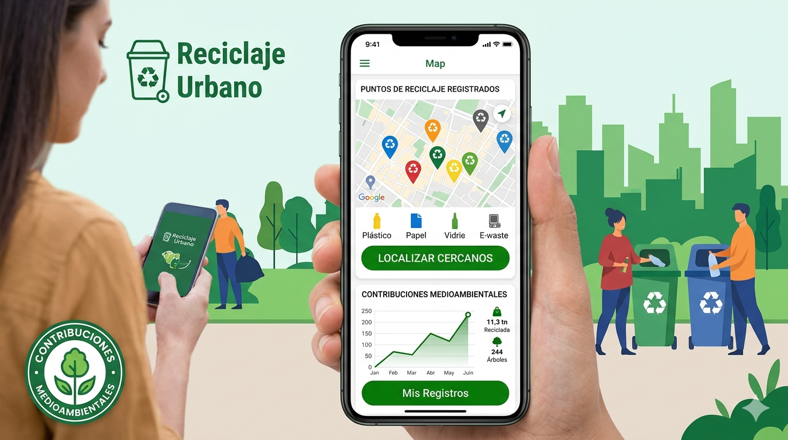
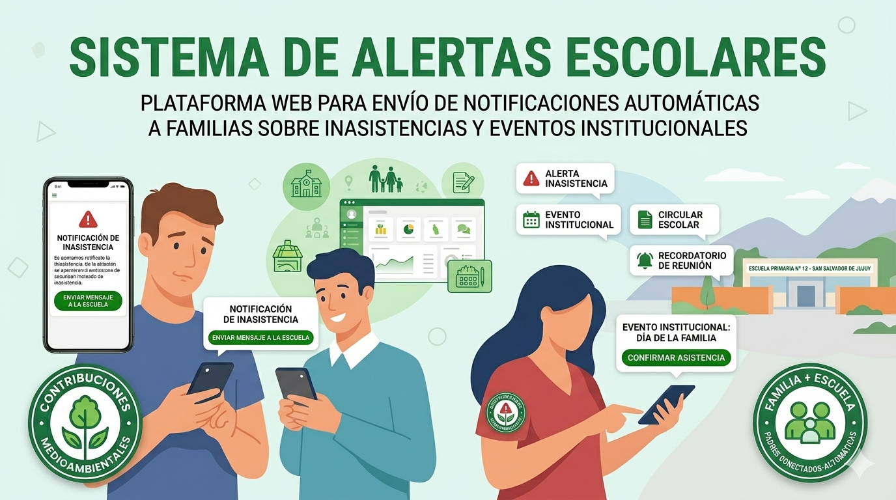
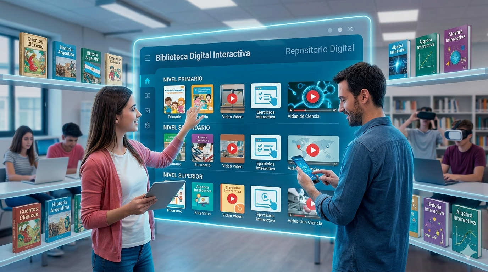

App de Reciclaje Urbano

Aplicacion movil para localizar puntos de reciclaje cercanos y registrados como contribuciones medioanbientales
categoria:Medio Ambiental
Estado:En curso
Ver detallesPlataforma de Gestion de Proyectos Educativo
Busca y filtra los proyectos disponibles segun categoria, año o estado

Aplicacion movil para localizar puntos de reciclaje cercanos y registrados como contribuciones medioanbientales
categoria:Medio Ambiental
Estado:En curso
Ver detalles
Plataforma web para enviar notificaciones automaticas a familias sobre inasistencias y eventos intitucionales
Cattegoria:Educacion Digital
Estado:En curso
Ver detalles
Repasitoria Digital de libros y materiales clasificados por nivel educativo
Categoria: Desarrollo de Software
Estado: Finalizado
Ver detallesSistema de gestion de tutoriales academicas ára asignar tutores a alumnos y hacer seguimineto de su progreso
Categoria:Educacion Digital
Estado:Finalizado
Ver detallesHerramienta de seguimiento del bienestar fisico y emocional de los estudiantes
Catogoria: En Curso
Ver detalles